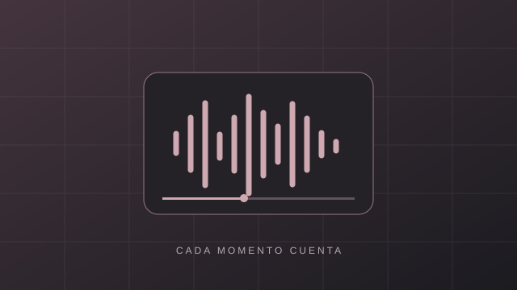

Elimina únicamente los datos locales gestionados que aparezcan en la lista de revisión. Conserva tu licencia, las activaciones del servidor y los archivos externos.
Antes, copia tus clips importantes desde la biblioteca. Finaliza o cancela trabajos activos y espera a que se cierren. Los bloques pendientes se descartan por separado desde Espacio y papelera.
Archivos exactos que se eliminarán
EMPIEZA CON UN CLIP CORTO
De la idea al MP4.
Tu guía de Julio Clip, paso a paso.
01
Elige tu contenido
En Directos pega el enlace público de tu emisión de YouTube, Kick o Twitch. En Videos publicados pega un enlace compatible o selecciona tu archivo MP4, MOV o MKV de hasta 2 GB. Procesa contenido al que tengas derecho de acceso y uso.
02
Define cantidad y duración
Puedes pedir de 1 a 50 clips por proceso y hasta 3 minutos cada uno. Son máximos: no se crean clips de relleno. El modo rápido analiza aproximadamente un minuto; el normal, cinco. Para un clip largo el bloque se amplía para que quepa.
03
Comprueba el avance
Monitoreo muestra grabación, transcripción, selección y clips reales. «Terminar y generar clips» cierra la captura y procesa lo pendiente. Cancelar conserva bloques completos para reintentar. Los videos publicados muestran su tarea y estimación cuando hay datos suficientes.
04
Revisa los candidatos
En Videos publicados pulsa Buscar momentos. Acepta una propuesta para usar sus tiempos o recházala. La puntuación indica señales de interés, no garantiza visitas. Los anuncios y los planos congelados se filtran por indicios; comprueba el resultado.
05
Biblioteca y editor
Filtra por título, categoría o puntuación. Haz clic en Editar. Mueve la línea de tiempo, marca inicio/final y añade tramos a quitar: las partes conservadas se unen sin saltos de tiempo. El original se conserva al exportar una copia.
06
Encuadre y pantalla dividida
Elige Original, 9:16, 16:9 o 1:1; 720p o 1080p. Con recorte manual puedes arrastrar para centrar y ajustar zoom. En Kick, activa pantalla dividida antes de empezar; selecciona con el ratón las regiones de cámara y juego.

Ejemplo ilustrado. El video real se muestra en el editor.07
Subtítulos y estilo
Activa Subtítulos y «visibles en el MP4». Elige uno de los ocho estilos, color, fuente y posición. En el editor corrige las palabras. La vista renderizada usa el mismo motor que la exportación. Las letras ya incrustadas en clips antiguos sin base limpia no se pueden retirar.
08
Rendimiento y licencia
Usa Ligero si el equipo tarda. La limpieza requiere revisar la lista antes de borrar. La versión Personal no pide código. La Pública valida 30 días con hora del servidor y renueva mediante otro código; actualizar no reinicia ni consume tu licencia.
DE UN DIRECTO A MUCHAS HISTORIAS
Encuentra el momento. Dale su propio clip.
Pega el enlace de tu directo y deja que Julio Clip busque y exporte fragmentos mientras sigue la emisión.
YOUTUBE · KICK · TWITCH · TIKTOK
Recorta un video ya publicado.
Importa un video, analiza su imagen y sonido y exporta el momento que elijas.
Comprobando el entorno…
Edición pública · Hasta dos clips de 30 segundos por cada 24 horas. La marca de agua se puede usar en uno de ellos.
SEGUIMIENTO DEL DIRECTO
Monitoreo en tiempo real
Inicia un directo para ver el progreso de la sesión.
El reproductor de YouTube sigue la señal pública. Su retraso puede diferir del de la captura. Abrir en YouTube
01
Grabando
En espera
02
Transcribiendo
En espera
03
Buscando momentos destacados
En espera
04
Creando clips
En espera
Tiempo total grabado
00:00:00
Fragmentos revisados
0
Momentos destacados
0
Candidatos descartados
0
Clips generados
0
Clips en cola
0
Clips listos de esta sesión
Aún no hay clips listos.
Decisiones recientes
El interés se estima a partir de imagen, audio y narración. El contador agrupa candidatos parecidos del mismo bloque.
Aquí aparecerán los motivos de descarte.
01
Configura el directo
Clips automáticos del directo
Pega el enlace del directo arriba. Elige cuánto material quieres analizar antes de generar clips.
Bloques de alrededor de 5 minutos. Hay más momentos para comparar.
Hasta 50 clips por video / proceso · Duración máxima por clip: 3 minutos
La cantidad depende de los momentos que caben sin repetir fragmentos. Más clips requieren más tiempo de exportación.
Salida vertical. Cámara arriba y gameplay abajo. Ajusta las dos zonas al tamaño del vídeo.
La cámara empieza en la esquina inferior derecha. El recorte de gameplay evita esa zona y puedes ajustarlo.
Cámara
Gameplay
Captura detenida.
Los ajustes se aplican al iniciar. Los bloques pendientes conservan su configuración. Detén la captura e inicia una nueva para cambiar estos ajustes.
01
Importa un video
Videos individuales accesibles de hasta 2 GB. También puedes importar un directo de YouTube que ya terminó.
Hasta 50 clips por video · Duración máxima por clip: 3 minutos
o desde tu computadora
Todavía no has importado un video.
Progreso del video publicado
Esperando actividad del equipo.
Puedes trabajar con un video publicado mientras se graba el directo.
02
Marca de agua del directo
Ilustración de la marca: cambia de esquina cada 8 segundos. La exportación aplica tu selección al video real.
Introduce los tiempos en segundos desde el inicio del video.
En vertical, el recorte llena la pantalla y puede quitar contenido lateral. Activa Seguir la cara para un encuadre automático o ajústalo en el editor.
Tu propia marca de agua
Puedes utilizar tu propio logo transparente.
Se conserva la transparencia. «Quitar marca de agua» también desactiva tu logo. Los cambios se aplican al iniciar una nueva operación.
Encuadre y título
Para Shorts y TikTok. El encuadre sigue a la cara en formato vertical.
Hasta 3 minutos por clip. Elige Original para mantener la proporción del vídeo.
03
Momentos sugeridos
Por qué se descartaron otros fragmentos
Importa un video y busca momentos destacados.
Tus clips
MP4 · H.264
Los clips exportados aparecerán aquí para descargarlos.
Editor de clips
Encuadre
Mueve el reproductor a donde quieras marcar un corte. Los tiempos corresponden al clip original.
Espacio y papelera
El diagnóstico requiere conexión.
Los clips antiguos pasan a la papelera al superar el máximo. La papelera también ocupa espacio. Al llegar al límite de GB o a la reserva de disco, se detiene la captura; no se borran clips a escondidas.
Papelera recuperable
Sin datos de biblioteca.
Estado del equipo
Esperando diagnóstico.
Comprobando las herramientas del equipo.
Mantén abierta la aplicación mientras procesas o capturas. Desde esta sección puedes comprobar las herramientas locales.